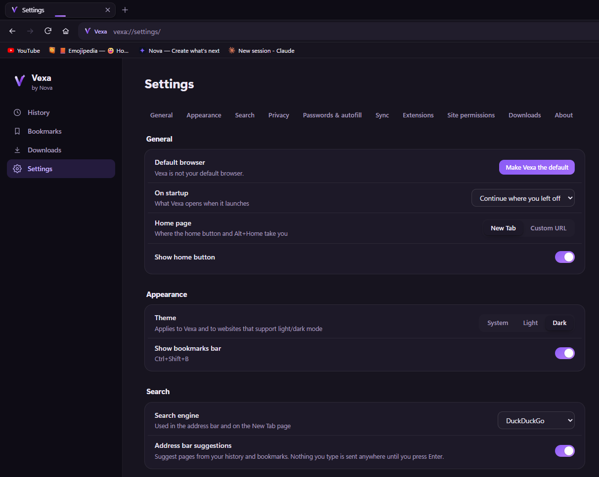
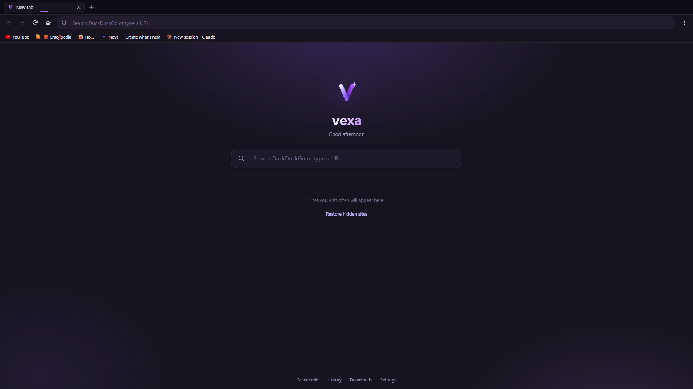

01 / BROWSING
A browser that feels like yours.
Move between tabs, pick up closed pages, organize bookmarks, and keep your place with session restore. The everyday details are right where you expect them.
Meet Vexa. A desktop browser built around the things that matter: a focused experience, useful controls, and privacy that doesn't get in your way.

Vexa brings the familiar power of Chromium into an interface designed to feel considered, calm, and unmistakably its own.

Move between tabs, pick up closed pages, organize bookmarks, and keep your place with session restore. The everyday details are right where you expect them.
Downloads with pause and resume, find-in-page, per-site zoom, printing, page source, and DevTools—without hunting through extensions.
Bookmarks with folders and search, browsing history grouped by day, and import or export using the standard browser bookmark format.
Choose a folder in a service you already use. Vexa encrypts a sync file with a passphrase before it leaves your device, so your storage provider only sees encrypted data.
Vexa gives you controls that are easy to understand and close at hand. Your browser profile stays on your device, and private windows use an in-memory session.
Explore the detailsPrivate sessions are held in memory and aren't saved to your normal browsing profile.
Saved passwords are encrypted with your operating system's secure storage before being written to disk.
A passphrase-based encryption layer protects the data Vexa syncs through a folder you choose.
On by default and run entirely on your device: blocks third-party ads and trackers, cross-site cookies and fingerprinting, upgrades to HTTPS, removes tracking parameters, blocks unwanted popups and warns before known phishing and scam sites. Turn it off for any site in one click.
Do Not Track, Global Privacy Control, site permissions, and clear-on-exit options.
Choose system, light, or dark appearance, and give the New Tab page a wallpaper from the Vexa gallery or your own photo. Set your search engine (including Vexa Search, Nova’s own engine, in beta), home page, startup behaviour, and download preferences.
Import and export standard HTML bookmarks, including the format used by Chrome, Edge, and Firefox.
Use familiar keyboard shortcuts, pin the tabs you always keep open, reopen closed tabs, move tabs between windows, and restore your session after a restart.
Vexa is an actively developing browser. Here's the current picture, without the fine print hidden away.
Stock Electron does not include Widevine DRM. Protected streaming support is an optional, separately configured path and is not verified for this release. Google sign-in has also not been verified against a live login.
Vexa is a desktop browser built with Electron 45 and Chromium 156. Its interface is a separate, sandboxed renderer, while browser tabs use individual WebContentsViews.
Your normal browser profile is stored locally in your operating system's user-data folder. On Windows, that is under your AppData profile. You can open the profile location from Settings → About.
No Vexa sync server or account is required. You choose a shared folder, and Vexa writes an encrypted sync file there. You set the passphrase yourself.
Not directly. The current extension support is for loading unpacked extensions, and Electron implements only part of the Chrome extension API.
The installer adds Vexa to your Start menu and can be uninstalled from Windows Settings. The portable build is a single file that runs without installing. Both keep your browser profile in your AppData folder.
Vexa 0.6.0 isn't code-signed yet, so Windows SmartScreen may show “Windows protected your PC”. Choose More info → Run anyway. Only download Vexa from this page or the official GitHub release.
The next chapter of your browsing experience starts here. Get the Windows installer, or the portable build if you'd rather not install anything.